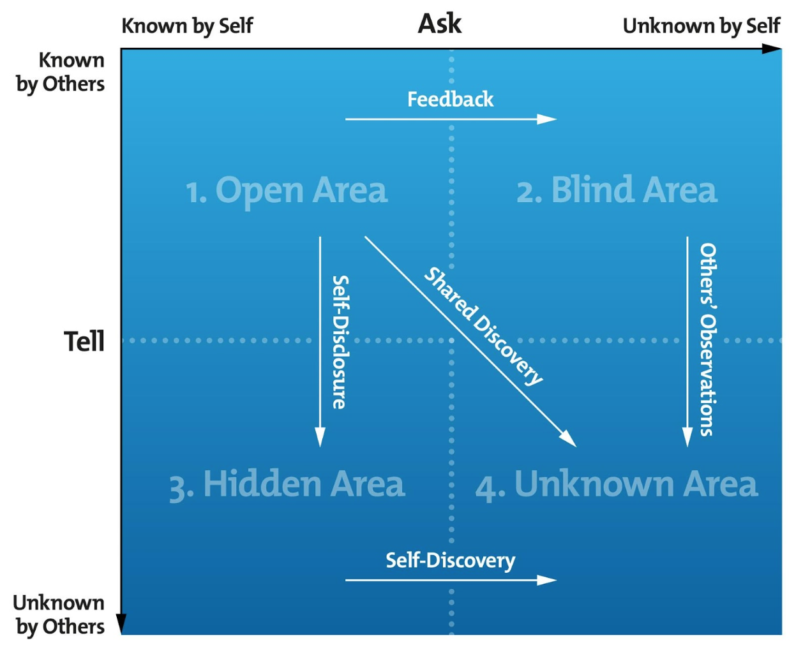

able, accepting, adaptable, bold, brave, calm, caring, cheerful, clever, complex, confident, dependable, dignified, energetic, extroverted, friendly, giving, happy, helpful, idealistic, independent, ingenious, intelligent, introverted, kind, knowledgeable, logical, loving, mature, modest, nervous, observant, organized, patient, powerful, proud, quiet, reflective, relaxed, religious, responsive, searching, self-assertive, self-conscious, sensible, sentimental, shy, silly, spontaneous, sympathetic, tense, trustworthy, warm, wise, witty,
able, accepting, adaptable, bold, brave, calm, caring, cheerful, clever, complex, confident, dependable, dignified, energetic, extroverted, friendly, giving, happy, helpful, idealistic, independent, ingenious, intelligent, introverted, kind, knowledgeable, logical, loving, mature, modest, nervous, observant, organized, patient, powerful, proud, quiet, reflective, relaxed, religious, responsive, searching, self-assertive, self-conscious, sensible, sentimental, shy, silly, spontaneous, sympathetic, tense, trustworthy, warm, wise, witty,
| Known to Self | Not known to self | |
|---|---|---|
| Known to Others | Open | Blind |
| Not Known to Others | Hidden | Unknown |
 2